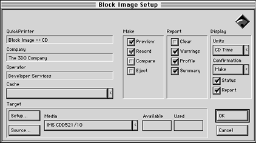
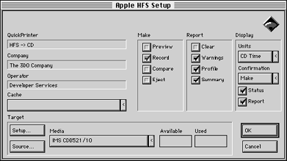

Because the compact disc recorder has very little buffering, your Macintosh must maintain a continuous 300 KB/s data stream to it during recording. Therefore, prepare your Macintosh as follows:
Disconnect the Macintosh from any networks and shut down all network drivers.
Remove system extensions that attempt to monitor SCSI bus activity, such as those that implement flashing menu bar icons to show disk activity.
Keep the compact disc recorder in a stable environment, in particular:
Make sure there is no movement near the recorder; it can cause a faulty CD-ROM disc.
Don't place the Macintosh hard drive on top of the recorder or near loudspeakers.
The QuickTOPiX software lets you master a CD-ROM disc in several different
formats, two of which you use during the mastering process:
Choosing Block Image creates a disc in 3DO format for testing.
Choosing Apple HFS image creates an HFS disc for delivery to the 3DO Company for encryption.
This section discusses setting up the software for both image formats and lists the files created during that process.
Note: Setting up the software for both image formats before starting the mastering process saves time and trouble later.
Setup for Mastering a CD-ROM for Testing
To set up the software for mastering a CD-ROM disc for testing, follow these steps:
Make sure that you have installed the latest version of the QuickTOPiX software, including the QuickTOPiX system extension.
Find the QuickTOPiX Chooser folder in the QuickTOPiX folder on your Macintosh.
Double-click on the Block Image icon in the QuickTOPiX Chooser folder.
The setup screen for recording a CD-ROM image file to disc appears. This type of recording creates a disc for testing.

Figure 1: QuickTOPiX setup screen for block image format.
Type in the company name and operator name, deselect the Preview check box in the Make section, and click OK.
In the dialog box that appears, click Yes to save your changes.
Setup for Mastering a CD-ROM for Encryption
To set up the software for mastering an HFS image, follow these steps:
Double-click on the Apple HFS icon.
The Apple HFS setup screen for mastering a disc of an entire Macintosh volume appears. This type of mastering process creates a disc that you send to The 3DO Company for encryption.

Figure 2: QuickTOPiX setup screen for Apple HFS format images.
Type in the company name and operator name, deselect the Preview check box in the Make section, and click OK.
In the dialog box that appears, click Yes to save your changes.
Files Created by the Software Setup
After completion of the software setup for Block image format and Apple HFS image format, there are four new files on your desktop:
Apple HFS and Block Image files contain the information you just entered.
Apple HFS.r and Block Image.r are log files that the QuickTOPiX system maintains and updates whenever you use one of the two images.